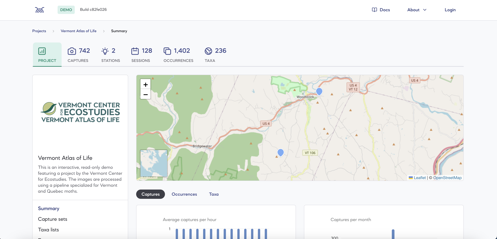

- Open-source platform from the Mila Institute
- Processes images from automated wildlife camera traps in the field
- Classifies insect species using deep learning — supporting biodiversity monitoring at scale
- Used by multiple research institutions across different deployment environments
insectai.org — open source, community-driven
